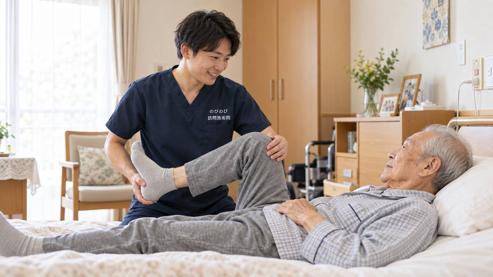

坐骨神経痛でお尻から足にかけて痛みやしびれが続くと、旭区内の整形外科や治療院へ通うこと自体が重荷になっていきます。段差を降りる、車に乗り込む、座って順番を待つ。どれも坐骨神経痛のある方には楽な動作ではありません。通うことが負担になり、ケアから足が遠のいてしまう。そんなときの選択肢が、国家資格者がご自宅へうかがう訪問鍼灸マッサージです。坐骨神経痛に鍼やお灸・手技でできること、先に医療機関へ相談すべきサイン、保険の対象や費用、旭区での対応まで整理します。
この記事のポイント
坐骨神経痛で腰から足の痛み・しびれが長く続き、旭区内の通院がつらくなった方は、自宅で訪問鍼灸マッサージを受けられます。慢性的に続く症状に対して医師の同意が得られれば、はり・きゅうの医療保険で受けられます。1回の施術は総額3,950円で、1割負担の方の自己負担はおよそ395円です。エリア内は一律で、別途の出張費はいただきません。ただし、急に足に力が入らなくなった、排尿や排便に異常が出たといったときは、先に医療機関を受診してください。
千林商店街の人混みと段差が、こんなにつらく感じる日が来るなんて
大阪市旭区にお住まいで、お尻から太ももの裏、ふくらはぎへと片脚だけに走る痛みやしびれにお困りではありませんか。千林商店街を抜けようとしても、人混みで立ち止まったり、ちょっとした段差でよける動きをするたびに、腰から足へ電気のような痛みが走る。買い物袋を持って前かがみになった瞬間にズキンとくる。以前は当たり前にこなせていた日常が、坐骨神経痛によって少しずつ削られていくつらさは、経験した方にしか分からないものです。
旭区は京阪本線と地下鉄谷町線が交わり、千林・森小路・関目、千林大宮・関目高殿と、駅を軸に人の行き交う下町です。生江や赤川、太子橋のあたりには、長く住み継がれてきた住まいが多く残ります。玄関までの段差や家のなかの動線はお宅ごとに違い、脚に痛みがあると、その一つひとつが移動を重くしてしまいます。まずはお尻から足にかけての片脚の痛み・しびれが、どういう性質のものなのかを一緒に整理していきましょう。
座ってから立つ瞬間、歩き出しの一歩目｜引き金を知る
坐骨神経痛でよくあるのは、椅子や床に座っていて立ち上がるときの最初のひとこわばり、歩き出しの一歩目、前かがみになる動き、そして体の冷えで痛みやしびれが強まるという引き金です。腰椎から出た神経の通り道に沿って、お尻・太もも裏・ふくらはぎと片脚性に症状が出るのが特徴で、腰痛と一続きに感じる方もよくいらっしゃいます。生江や新森の古い一戸建てで、こたつや低い座卓の生活が長いと、立ち座りのたびにこの引き金を踏みやすくなります。
症状の背景や長引く腰の痛みとの関係については、坐骨神経痛・長引く腰の痛みのページでも詳しく触れています。ご自身の痛みがどのタイミングで出るのかを知っておくと、日々の動作の工夫にもつながります。
城北公園の川沿いを、また自分の脚で歩けるように
旭区の方にとって城北公園は、季節の花や淀川の水辺を眺めながら散歩できる、暮らしの支えのような場所です。ところが坐骨神経痛が出ると、川沿いを少し歩いただけで脚がしびれ、ベンチを探して休まないと進めなくなる。関目や高殿から公園までの道のりさえ遠く感じ、いつしか外出そのものが億劫になっていきます。動かさないことでさらに固さや痛みが増し、家に閉じこもりがちになる。こうして動く機会が減っていくことが、痛みを長引かせる一因になります。
訪問での鍼灸・マッサージは、こうした「出かけにくくなった時期」にこそご自宅で受けていただけるのが利点です。無理に外へ出ずとも、清水や中宮、大宮のご自宅で、脚の状態に合わせた施術や機能訓練を組み合わせていけます。機能訓練は鍼灸に加えて行います。これらに追加の料金はかかりません。
まずここだけは｜受診を優先していただきたいサイン
片脚の痛みやしびれの多くは腰椎由来ですが、急に脚に力が入らなくなる脱力、両脚のしびれ、排尿・排便がうまくいかないといった異常がある場合は、話が別です。こうしたサインがあるときは、鍼灸・マッサージより先に整形外科などの医療機関を受診してください。早い判断が大切な状態が隠れていることがあります。おひとりで暮らしておられる方も多いので、この見極めははっきりお伝えしておきます。
なお、鍼灸・マッサージは病気そのものを治すものではなく、効き方には個人差があります。断定的なことは申し上げられませんが、痛みやこわばりとどう付き合っていくかを、体の状態を見ながら一緒に考えていく。そうした関わり方だとお考えいただければと思います。
費用のこと、旭区での対応のこと
医療保険（療養費）で受けるはり・きゅうの対象は、神経痛・リウマチ・頸肩腕症候群・五十肩・腰痛症・頸椎捻挫後遺症の6疾病です。坐骨神経痛は「神経痛」や「腰痛症」の枠で該当しうる症状で、ご利用には医師の同意書が必要になります。要介護認定は不要で、介護保険の限度額とは別枠のため併用もできます。料金は1回総額3,950円、自己負担は1割で約395円、週2回なら1割の方で月およそ3,160円が目安です。同一部位について、医療保険のリハビリと鍼灸を同じ月に同時に算定することはできません。仕組みの詳しい説明は「料金はいくら？医療保険の自己負担額と仕組み」をご覧ください。
旭区は千林・森小路・関目から生江・赤川・太子橋・清水・新森・中宮・大宮まで、エリア内は出張費なし・料金一律で伺います。どこまで訪問できるかは「対応エリアはどこまで来てもらえる？」に、旭区での取り組み全般は大阪市旭区の訪問鍼灸マッサージにまとめています。細い路地の奥のお宅でも、まずはお気軽にご相談ください。
よくある質問
旭区で坐骨神経痛でも保険を使えますか？
慢性的に続く坐骨神経痛について、かかりつけの医師が鍼やお灸での治療を必要と認めて同意書を書いてくれ、かつ通院がむずかしい状態であれば、医療保険の対象になります。旭区のかかりつけ医にお願いでき、同意書の段取りは当院が整えます。いまの状態と、通院の様子をお聞かせいただくところから始めます。
長引いている坐骨神経痛でも大丈夫ですか？
はい。急性の強い痛みではなく、慢性的に続いているものが対象です。長く付き合ってきた症状だからこそ、腰と脚をひと続きでみる形が合います。ただし急に足に力が入らない、排尿・排便に異常があるといったときは、まず医療機関を受診してください。
しびれにも何かできますか？
腰・お尻・脚の緊張をゆるめることで、しびれや重だるさの感じ方が変わったというお話があります。神経を刺激している筋肉の緊張をゆるめること自体が助けになる場合もあります。効果の出方には個人差があります。
いくらかかりますか？出張費は別ですか？
1回の総額が3,950円で、ご負担は割合の分だけになります。1割の方でおよそ395円が目安です。交通費や出張料が加算されることはなく、エリア内は同額です。お支払いはひと月分をまとめてで、その月の施術内容がわかる明細をお渡しします。
旭区のどこまで来てもらえますか？
旭区内全域に伺います。地下鉄谷町線・京阪本線の沿線や城北公園・千林方面など、市内であれば地域を問わず対応します。有料老人ホームやサービス付き高齢者向け住宅にお住まいの方のところへもうかがいます。お住まいの地域をお聞かせください。
介護認定がないと受けられませんか？
そんなことはありません。訪問鍼灸マッサージが使うのは医師の同意にもとづく医療保険で、介護保険の認定制度とは別のものです。介護認定を受けていなくても、医師の同意が得られれば受けていただけます。介護保険の限度額とも別枠です。
旭区でひとり暮らしでも受けられますか？
はい。ひとり暮らしの方も受けられます。急な体調変化に備えて、ご家族などの連絡先を事前にうかがっています。ご本人が話しづらいときは、ご家族だけでのご相談からでも承ります。
腰から足のケアは毎回同じ人が来ますか？
できるだけ同じ担当者が続けて伺います。腰からお尻、脚全体の状態を同じ目で続けて見られるので、変化に気づきやすく、その方に合わせたケアを重ねていけます。同じ曜日・時間帯で伺うことが多く、生活のリズムにも組み込みやすくなります。